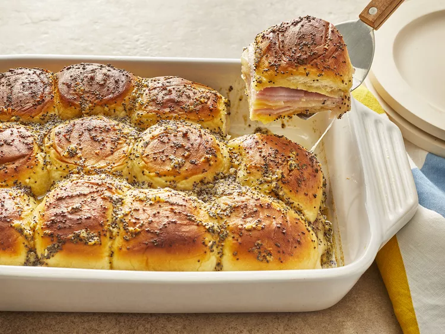

Home
Baked Ham and Cheese Sliders

Description
This sliders recipe is perfect for parties and is sure to be
enjoyed by anyone! Featuring delicious deli meat, melted Swiss
cheese, and Dijon mustard packed into a buttery roll, these
sliders are a must-have at your next gathering!
Ingredients
- 3/4 cup melted butter
- 1 1/2 tablespoons Dijon mustard
- 1 1/2 teaspoons Worcestershire sauce
- 1 1/2 tablespoons poppy seeds
- 1 tablespoon dried minced onion
- 24 mini sandwich rolls
- 1 pound thinly sliced cooked deli ham
- 1 pound thinly sliced Swiss cheese
Steps
- Gather all ingredients.
-
Preheat the oven to 350 degrees F. Grease a 9x13-inch baking
dish.
-
Mix butter, Dijon mustard, Worcestershire sauce, poppy seeds,
and dried onion in a bowl.
-
Separate the tops from the bottoms of the rolls; arrange the
bottom pieces in a layer in the prepared baking dish. Layer
about 1/2 of the ham onto the rolls; add a layer of Swiss
cheese and top with remaining ham slices.
-
Place the tops of the rolls onto the sandwiches. Pour mustard
mixture evenly over the rolls.
-
Bake in the preheated oven until the rolls are lightly browned
and the cheese has melted, about 20 minutes. Slice into
individual rolls through the ham and cheese layers to serve.
References
Baked Ham and Cheese Sliders Recipe on AllRecipes.com